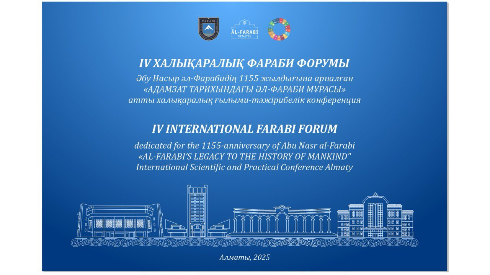

IV INTERNATIONAL FARABI FORUM
"AL-FARABI’S LEGACY TO THE HISTORY OF MANKIND"
April 2, Al-Farabi Scientific library, conference-hall No. 409
- 10:00 - 10:30 Registering forum guests and participants
- 10:30 - 11:00 Introducing of Al-Farabi Museum, «Al-Farabi’s legacy» book exhibition
- 11:00 - 14:00 PLENARY SESSION
- 11:00 - 12:05 Introduction speech, Guests congratulations
- 11.00 - 11.10 Zhanseit TUIMEBAYEV
- 11.10 - 11.15 Aykhan Korkmaz
- 11.15 - 11.20 Salikh Albdakh
- 11.20 - 11.25 Hosein Agazade
- 11.25 - 11.30 Samir Derekh
- 11.30 - 11.35 Ahmed Hussein Muhammad Ibrahim
- 11.35 - 11.40 Tursyn Gabitov
- 11.40 - 11.45 Shuaybu Umar Gokaru
- 11.45 - 11.50 Adem Chilek
- 11.50 - 11.55 Roberto Boltri
- 11.55 - 12.00 Nur Saralaev
- 12.00 - 12.05 Albert Fishler
- 12:05 - 12:10 Presentation of books dedicated to the 1155th anniversary of Abu Nasr al-Farabi
- 12:10 - 14:00 PLENARY REPORTS
- 12.10 - 12.20 Zhakypbek ALTAEV – Methodological Issues in the Formation of Farabi Studying School
- 12.20 - 12.30 Nur KIRABAEV – Ancient Philosophy Metamorphoses in Arab-Muslim Culture and Philosophy: Al-Farabi and Ibn Sina
- 12.30 - 12.40 Natalia SEITAKHMETOVA – The Philosophy in the Works of Abu Nasr al-Farabi as a Scientific and Educational Project
- 12.40 - 12.50 Samal TULEUBAIEVA – The Formation of Al-Farabi's Philosophical Dictionary: Eastern and Western Perspectives
- 12.50 - 13.00 Niginakhon SHERMUKHAMEDOVA – The Significance of Al-Farabi's Ideas in Today's Society in Uzbekistan
- 13.00 - 14.00 Memorial photo, Break
- 14:00, №408 Section No.1. Al-Farabi and a Dialogue of Cultures
- 14:00, №303 Section No.2. Al-Farabi and Abai: Harmony of Spiritual Heritage
- 16:00, №303 Section No.3. Al-Farabi and the Modern Society: Man, Ethics, and Science
- April 3, 14:00, №408 Section No.4. Al-Farabi and Islamic Philosophy: Traditions and Innovations
- April 3, 16:00, №408 Section No.5. Intellectual and spiritual development in the Turkic world: the role and significance of Al-Farabi
- April 3, 17:00, №408 Closing of the conference.
Section No. 1. AL-FARABI AND A DIALOGUE OF CULTURES
Moderators: Aliya RAMAZANOVA, Gulchekhra GAFFAROVA
Secretary: Zhumagul BEKENOVA
- Azizkulov A.A. Abil-Hasan Al-Omar's Critique of Al-Farabi's Doctrine
- Baitenova N., Samet Baizhuma, Meiirbayev B., Baltymova M. Rumi's Sufi Philosophy in Global Spiritual Exploration and Development
- Jin Xiaogan, Alkhimbaeva A.B. The Influence of Al-Farabi's Psychological Thoughts on Contemporary Intercultural Communication
- Junshiev R.E. The Ethics of Farabi and the Issue of Values in the Era of Globalization
- Zhakupbekova D. Decolonial Epistemology – Learning to "Relearn" from Al-Farabi
- Ilmurodova F.Sh. Philosophical Reflections and Views in Farabi's Scientific Heritage
- Kalysheva N.K., Zholmukhamedova N.K. The Humanistic Potential of Abu Nasr al-Farabi's Political Philosophy
- Nuryshova G.Zh. The Ideal Knowledge by Kazakh Enlighteners
- Mustafayeva A.A. The Use of Certain Grammatical Terms in Arabic by Abu Nasr Al-Farabi and Abu Bakr Ibn As-Sarradj
- Taizhanov A.T. The Spiritual and Historical Continuities and Worldview Connections of the Great Kazakh Scholars
- Satershinov B.M. Establishing a Fair Society and Sustainable Development and the Knowledge of Al-Farabi
- Samatov Kh.U. Abu Nasr Al-Farabi's Views on Sufism
- Shuaybu Umar Gokaru. Al-Farabi's Influence on Translation: Intellectual Perspective
- Sharopov U.Sh. The Issues of Society and Personality in the Scientific Heritage of Al-Farabi
- Umarova R.Sh. Abu Nasr Al-Farabi – Founder of Eastern Peripateticism
- Hakkulov N.K. The Issue of Enhancing Contemporary World Culture and Philosophical Thinking
- Yusupov Zh.K. The Necessity of Utilizing Abu Nasr Al-Farabi's Heritage in the Education of Personal Spiritual Morality
Section No. 2. AL-FARABI AND ABAY: HARMONY OF SPIRITUAL HERITAGE
Moderators: Berik ATASH, Khakkulov N.K.
Secretary: Zhadira KAZIEVA
- Atash B.M. Propositions in the designatum-denotation structure: critical explication and deconstruction
- Altynbek K.M. Spiritual Roots in the Works of Al-Farabi and Abai
- Aman A.S. The integrity of upbringing and knowledge is the main key to happiness for Al-Farabi
- Bakytzhanova A.A., Alimbekova G.T. The role of science and education in the lives of young people: The heritage of Al-Farabi in education through the lens of sociology
- Bakhytzhan A.B. Al-Farabi on rhetoric and the art of persuasion: the role of speech culture in reducing stress among teachers
- Berkinov O.T. Analysis of the works of Abu Nasr Al-Farabi as a comprehensive system
- Duyssenbaev A.K., Baltymova M.R. The teachings of education in the heritage of Al-Farabi
- Dabikova Zh.S. Abu Nasr Al-Farabi’s Contribution to Education and Upbringing
- Ilyin A.G. Interiorizing tolerance in contemporary society through the lens of wisdom
- Kozhan A.A., Sambetov Zh.T. The issues and prospects of the contemporary scientific and philosophical study of Al-Farabi's heritage
- Kurultayev A.K., Ismailov K.K. The role of the individual in the development of society according to Al-Farabi
- Molotbarova K.I. Thoughts on the harmony of the ideas of Al-Farabi and Abai
- Myrzaly S.K., Syrybaev E.U. Improving spiritual life is the key to further renewing society
- Norboeva D.A., Gaffarova G.G. The issues of family and education in Farabi's teachings
- Nurgaliyev K.T. The core of Abai's worldview is education and science
- Nasibulina V.A. The limit of the ideal: Virtues, ethics, and freedom in Al-Farabi's philosophy
- Sariyeva E.M. Ethical values and their role in overcoming the unique identity crisis in middle age: Integration of Al-Farabi's ideas
- Saparbaev T. The educational heritage of Al-Farabi
- Yldasheva B.M. The unity of psychology and philosophy in the teachings of Al-Farabi
Section No. 3. AL-FARABI AND MODERN SOCIETY: MAN, ETHICS, AND SCIENCE
Moderators: Zeynabil AYDARBEKOV, Askarbek BEKBOEV
Secretary: Nazgul KUDAYBERGENOVA
- Aidarbekov Z.S., Khamdamov I.A. The moral imperative and cultural socialization of youth in the modern world
- Askar L.A., Pernebekova D.P. The approaches towards scientific knowledge in the history of the culture of thought and its orientations
- Aitbaeva G., Shamshadin K. Digitalization of the Religious Affairs Committee: Spreading Islam through modern technologies
- Abdullaev E., Shamsat A. The social and educational significance of the hadiths in which our Prophet said "(... not from us)".
- Bektuganov A., Mukhtidinov R.S. Al-Farabi and the place of people with special needs in society
- Kausov M., Adilbaeva Sh.A. The psychological consequences of domestic violence: A perspective through the prism of Islam
- Bayakhmetova D., Izbairov A.K. Mass media and information dissemination in the Soviet era
- Bekenova Zh.N. The existential meaning of virtual reality manifestations in the trend of informationization of modern society
- Gaffarova G.G. The issue of justice in Al-Farabi's reflections
- Galeeva R., Bulatbaeva A.A. Research on academic stress among students in Almaty
- Elyubaev B.K. Classical and modern theories of the concept of public agreement
- Erlankyz E. Gender differences in choosing a profession: why do women choose low-paying, caregiving jobs?
- Yuldoshev A.A. Wisdom and artificial intelligence: from the perspective of Al-Farabi's classification of sciences
- Koshkarbaev E.E. Kazakh and foreign Farabi learners
- Kudaibergenova N.Z. The Philosophy of Education of Al-Farabi: Its importance in today's society
- Kopbaeva Sh., Shamshat A. The uniqueness of the female image in Islam
- Lifanova T.Yu. Ethics, virtue, virtual
- Lifanova T.Yu., Verevkin A.V. Spirituality/Religiosity in Public Consciousness: Conceptualization of Terms
- Meimankhoja N.R. Some aspects of religious and secular values in reconciling the paradigm of a fair society (Kazakhstani experience)
- Maxsutova A.A. Ways to strengthen the social role of digital technologies in society
- Ospan D., Kenshilik T. Factors that influenced the formation of Abu Nasr al-Farabi's philosophy
- Orynbasar A.K. Political elite and the development direction of Kazakhstan
- Oljabaeva A.K. Formation of national values of Kazakhstani teenagers through extracurricular activities at school
- Pazilov T.A. Al-Farabi’s pedagogical heritage and its influence on modern education
- Ramazanova A.Kh. The philosophy of Al-Farabi and modern science
- Siu Si The impact of project-based thinking on teachers' professional development
- Khuatbergen K., Duisenbaeva A.K. The religious aspect of Kazakh women's national clothing and its modern representations
- Shakirova A.D., Bi Tao, Lvi Anki. Facilitating the assessment of teachers' qualifications based on innovations in teaching.
- Shanbaeva G.N. Theoretical approaches to analyzing supervision as an effective practice
Section No. 4. AL-FARABI AND ISLAMIC PHILOSOPHY: TRADITIONS AND INNOVATIONS
Moderators: Saniya EDILBAEVA, Nilyufar KOSHANOVA
Secretary: Doszhan BALABEKULY
- Amireev B., S. Oqan The place of the Mursal Hadith in the Hanafi school
- Ashilov M.S., Begalinova K.K., Begalinov A.S. Issues of Ismailism
- Abdirash N., Adilbaeva Sh. The teachings of the Prophet (peace be upon him) in the education of a Muslim character
- Begalinova K.K., Ashilova M.S., Begalinov A.S. Islamic Philosophy in the Middle Ages: Scope of Issues
- Begimbet N., Mukhtidinov R.S. Justification (forgiveness) for ignorance in matters of trust
- Vasiley M., Almukhametov A.R., Khamzaeva B. Religiosity in Islam and its types
- Gazhap Zh., Adilbaeva Sh. Worship and character education
- Ergalieva A., Zatov K.A. Prohibitions and Permissible Foods in Islam in M. Bigiev's Treatise "Mäida"
- Edilbaeva S.Z., Omarov S.A. The historical and philosophical concept of M.Kh. Dulati
- Ergasheva Yu.A., Begalinova K.K. Islam in the life of the people’s of Central Asia
- Zhumagalieva M., Kuranbek A.A. Muhammad Iqbal's religious interpretation of Sufism
- Imanbaeva Zh.M. The art of dialectics by Al-Farabi
- Ilyasova A., Akymkhanov A.B. The theological concept of evil in human life according to Imam Maturidi.
- Qadirbayuly E., Shamsat A. The place of the elderly in society according to Islam.
- Kolganatova S.B. Al-Farabi's views on language and speech culture
- Kular T., Ryskieva A.A. The foundations of faith of the AllatRa International Public Movement
- Lirov I., Anarbaev N.S. The purpose of justice in the rulings of transactions in the Hanafi school and its application
- Makan A., S. Oqan Understanding the concepts of death and life in the style of the Quran
- Maratuly S., Alpysbaev E.O. The role of wisdom in understanding the Shari'ah good "maslahah"
- Pirymkulov M., Adilbaev A., Utpynov N. The issue of Jarkh-ta'dil involves leniency (showing softness) and the scholars of mutasahil.
- Musabekov A., Izbaırov A.K. Methods of destructive religious movements in cyberspace
- Rakhmatulla M., Imammadi T. Sacred sites of the Kyzylorda region: religious-cultural heritage and spiritual values
- Rakhmetulla N., Imammadi T. A comparative analysis of the narratives of the Prophet and King Solomon in the Holy Bible and the Quran
- Torehanov M., Isakhan M.B. The ancient Tengri belief in the Kazakh field and marriage in Islam: similarities and differences
- Yuburov R., Anarbaev N.S. The verses of the Holy Quran about the worlds and stars (objective research)
Section No. 5. INTELLECTUAL AND SPIRITUAL DEVELOPMENT IN THE TURKIC WORLD: THE ROLE AND SIGNIFICANCE OF AL-FARABI
Moderator: Kazibek DAUTALIEV, Secretary: Raimbek ZEINULLIN
- Aleinikov M.V. The issue of happiness in Al-Farabi's ethical-philosophical views
- Askar L.A. The science of logic in the heritage of Ibn Sina
- Amrebaeva Z.T. "Kuttı Bilg" and Persian literary tradition
- Gabitov T.H. The philosophy of Al-Farabi in the context of the Turkic-Islamic Renaissance
- Ganieva Ch. Abu Nasr Al-Farabi's views on family
- Bazarali A.B. Mashkhur Zhusup Kopeiyuly, a representative of the Naqshbandi order in the Kazakh field
- Khoshanova N.M. The concept of man in Al-Farabi's spiritual and ethical teachings: the issue of perfection
- Kandov B.M. The role and significance of Abu Nasr Al-Farabi’s philosophical views in the socio-spiritual development of the Turkic world
- Nusipova G.I. The issue of happiness in Al-Farabi's teachings: spiritual and ethical dimensions
- Ramatov Zh.S. The issue of the harmonious perfect personality in the works of Abu Nasr al-Farabi
- Ruzmetova D. The significance of Abu Nasr al-Farabi's philosophical-didactic views on man in the education of youth
- Rakhmonov Zh.K. Al-Farabi's philosophical views, particularly his scientific and philosophical perspectives on the spiritual development of man.
- Rakhmonova G.S. The thoughts of Abu Nasr al-Farabi on education and upbringing
- Suleimenov P.M. The idea of a "Fair ruler" in Al-Farabi's worldview
- Tleugazina D.E. Al-Farabi and the Role of Modern Communication in Managing Society's Information
- Abdulkhayis M.M. The education of personality in Al-Farabi's views and modern psychology
- Khamitova B.A. The semantics of numbers and colors in Indian and Kazakh languages
- Ismailova G.R., Ilmurodova F.Sh. Zoroastrianism from prophecy to religious heritage.
- Yuldashev F.A. Philosophical meta-analysis of Abu Nasr al-Farabi's music theory